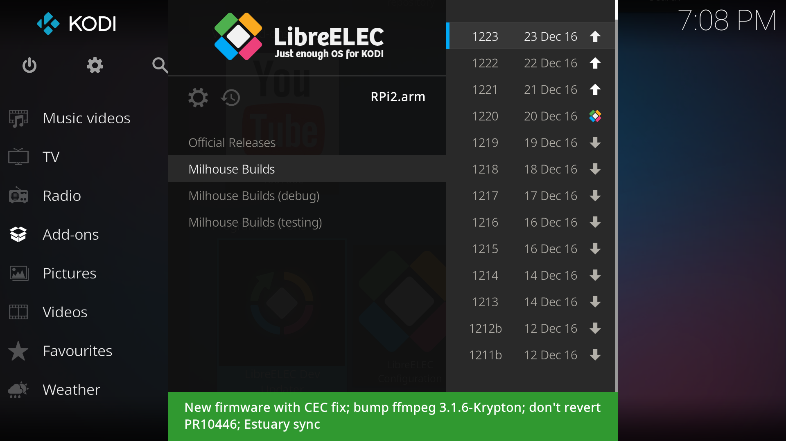
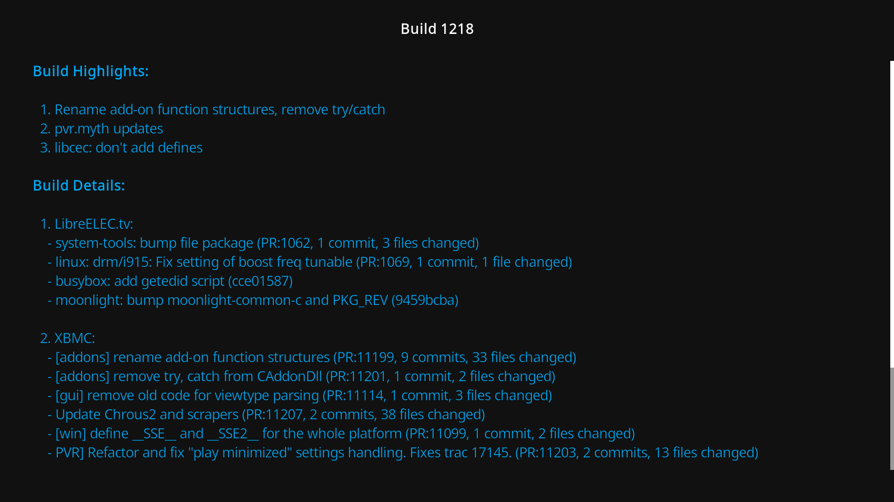

This add-on makes it easy to upgrade/downgrade LibreELEC development builds by downloading directly from Kodi.
It shows a list of available build sources and a list of builds available at the currently selected source.

To view more details about a build press the Info button (currently only for Milhouse Builds).

To perform an update the add-on will download the tar file into the /storage/.update folder. The update will then be installed on the next reboot.
Installation
- Install the Leopold repository zip file.
- Use the file manager to add http://repo.leopold.me.uk as a new source, or login via ssh and run
wget http://repo.leopold.me.uk/repo.leopold.zip
- Install from zip.
- Use the file manager to add http://repo.leopold.me.uk as a new source, or login via ssh and run
- Install LibreELEC Dev Updater from Leopold's Add-ons under Program Add-ons.
There are two steps required.
Installing from the repository will ensure that the add-on is kept up-to-date as I release updates.
Sources
Frequently asked questions
- Can I use a URL other than those provided? Yes, an additional custom URL can be configured in the add-on settings.
-
I prefer using the command line. Can I download builds that way?
Yes you can log in via ssh and run
./devupdate - Why is the add-on not updating? You probably installed the zip file instead of installing from the repository. If you install from the repository you will always receive the latest add-on updates.
Reporting Issues
If you get a script error or other problem please raise an issue on github. If you can reproduce the problem then please include a debug log, by following these steps:
- Turn on the 'Debug' option in the add-on advanced settings.
- Restart to start a clean log.
- Run the add-on again to reproduce the error.
- Upload the debug log. There are a couple of ways:
- Log in via ssh and run pastebinit ~/.kodi/temp/kodi.log
- Use the add-on "Kodi Log Uploader".
Be aware that development builds often have major bugs. you may experience frequent crashes or other problems when using these builds. stick to the official stable builds where possible. Do not use a development build unless there is a specific need.
To avoid potential issues with configuration, it is best to do a fresh install when switching from a stable to a development build, and vice versa.
It is advised to backup the userdata folder when updating. This step can now be automated by the add-on, thanks to the Backup add-on.